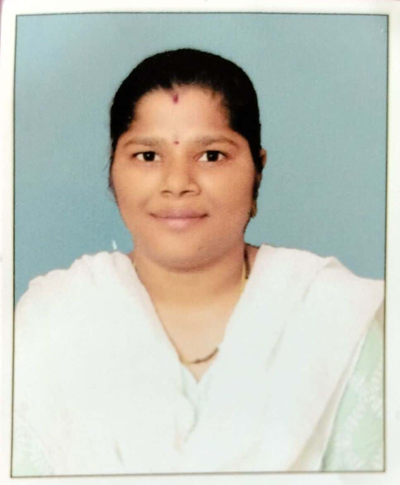

RESUME

Rajeswari Parimi
Mobile: +91 6302351605
Email Id: parimirajeswari2002@gmail.com
Objective :
Graduated top of the class in Computer Science, with the expertise in Java,python and JavaScript.
Proficient in Frintend technologies.Eager to bring fresh ideas abd a strong fundamental understanding
of software development principles to a dynamic team.
Qualification :
B.tech-CSE
JNTUA college of Engineering Kalikiri 2020-2023
CGPA-7.5
Diploma-CSE
Loyola Polytechnic College(YSRR),Pulivendula 2017-2020
Percentage-88.37%
SSC
A,P,Model School,Putlur 2016-2017
CGPA-9.0
Skills
- Java
- Html &CSS
- JavaScript
- Python
- Automation Testing
- DBMS
- SQL
Internships
Java Full Stack Developer
Kodnest Technologies Pvt Ltd/06/2023-02/2024
- Completed a rigorous six-month training program specializing in Java & Python Full Stack Development and Testing.
- Proficient in Web Development, SQL, Manual & Automation Testing.
- Gained expertise in Competitive Programming.
- Prepared for a versatile career in technology.
Projects
Heart Disease prediction using Machine Learning algo-rithms
Objective:
- Developed predictive models to assess the likelihood of heart disease occurrence and classify patient risk levels based on relevant symptoms using various Machine Learning classifiers.
- Utilized Python, Pandas, and Jupyter Notebook for data analysis and model development.
- Implemented Random Forest Regression, K-Nearest Neighbors (KNN), and Artificial Neural Networks (ANN) algorithms.
-
- Worked collaboratively to refine models and achieve accurate risk assess-ments.
Hobbies: